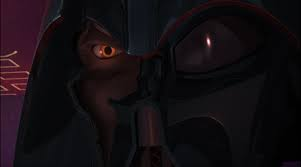

Some Pictures of Anakin Skywalker
In Chronological Order
Episode 1 Anakin
Episode 2 Anakin
The Clone Wars Anakin

Majority of Episode 3 Anakin
Pre-Suit/Knightfall Vader

End of Episode 3 Vader
Kenobi series Vader with a cracked helmet

Star Wars Rebels series Vader with a cracked helmet
Vader at the end of Episode 6 after he takes off his helmet
The World between Worlds Anakin from the Ahsoka series
Clone Wars flashback Anakin from the Ahsoka series